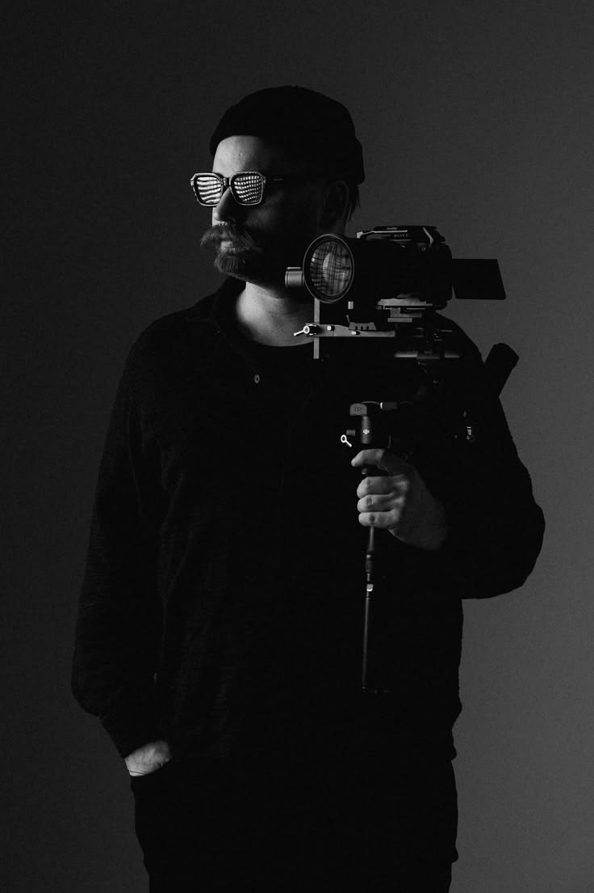
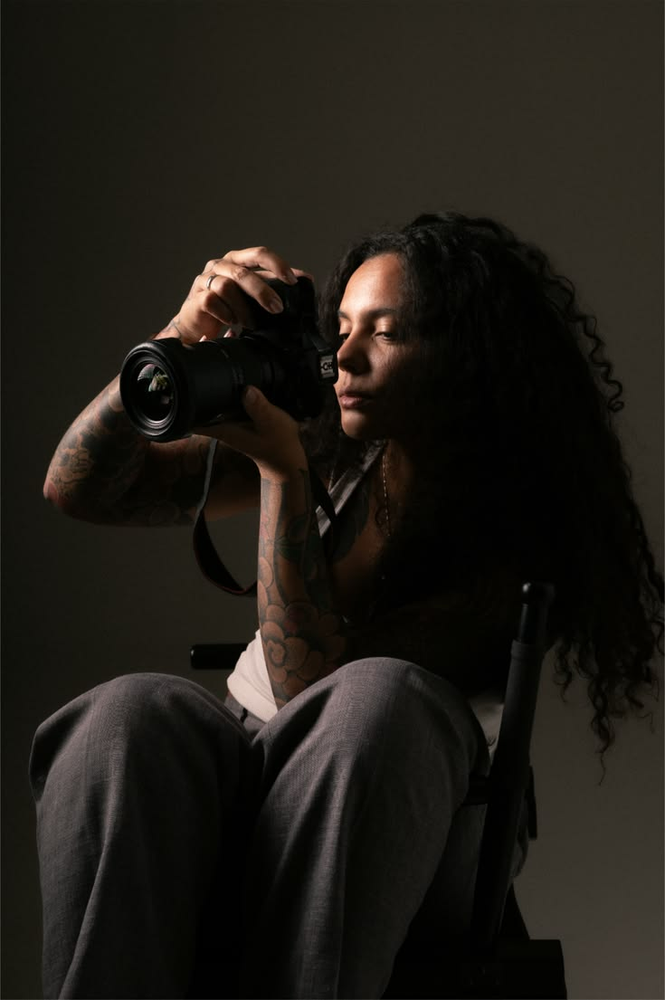

Abertura & Mostra de Curtas
Seleção nacional de novas vozes do audiovisual.
Quatro dias para assistir, conversar e criar ao lado de quem movimenta o cinema independente.
Seleção nacional de novas vozes do audiovisual.
Conversa sobre criação autoral, produção e distribuição.
Processo criativo e soluções práticas para produções independentes.
Exibição seguida de conversa com os realizadores.
Premiação das produções escolhidas pelo júri e pelo público.
Diretora e roteirista
Realizadora premiada por narrativas urbanas e histórias de identidade.

Produtor audiovisual
Especialista em viabilização e distribuição de projetos independentes.

Diretora de fotografia
Pesquisa luz, memória e linguagem visual em produções autorais.
A fita passa automaticamente. Pause para ler com calma.
Escolha seu ingresso e faça parte do festival.